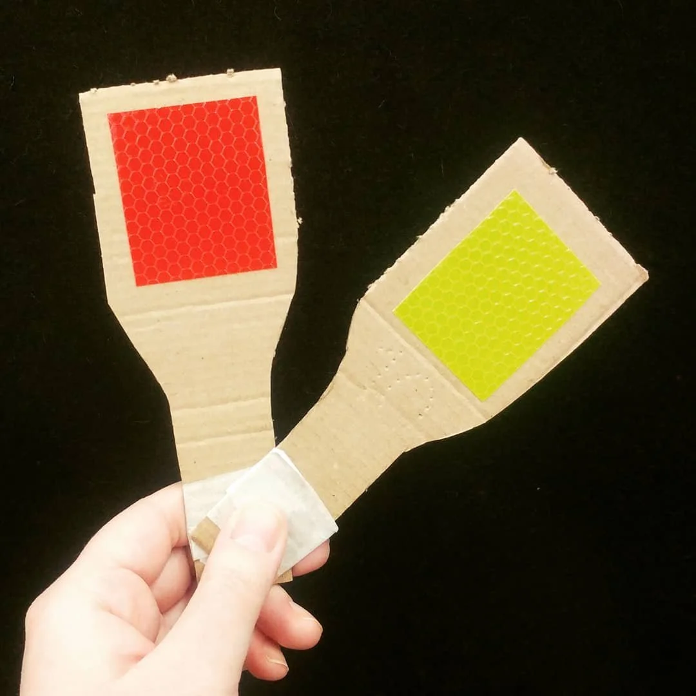
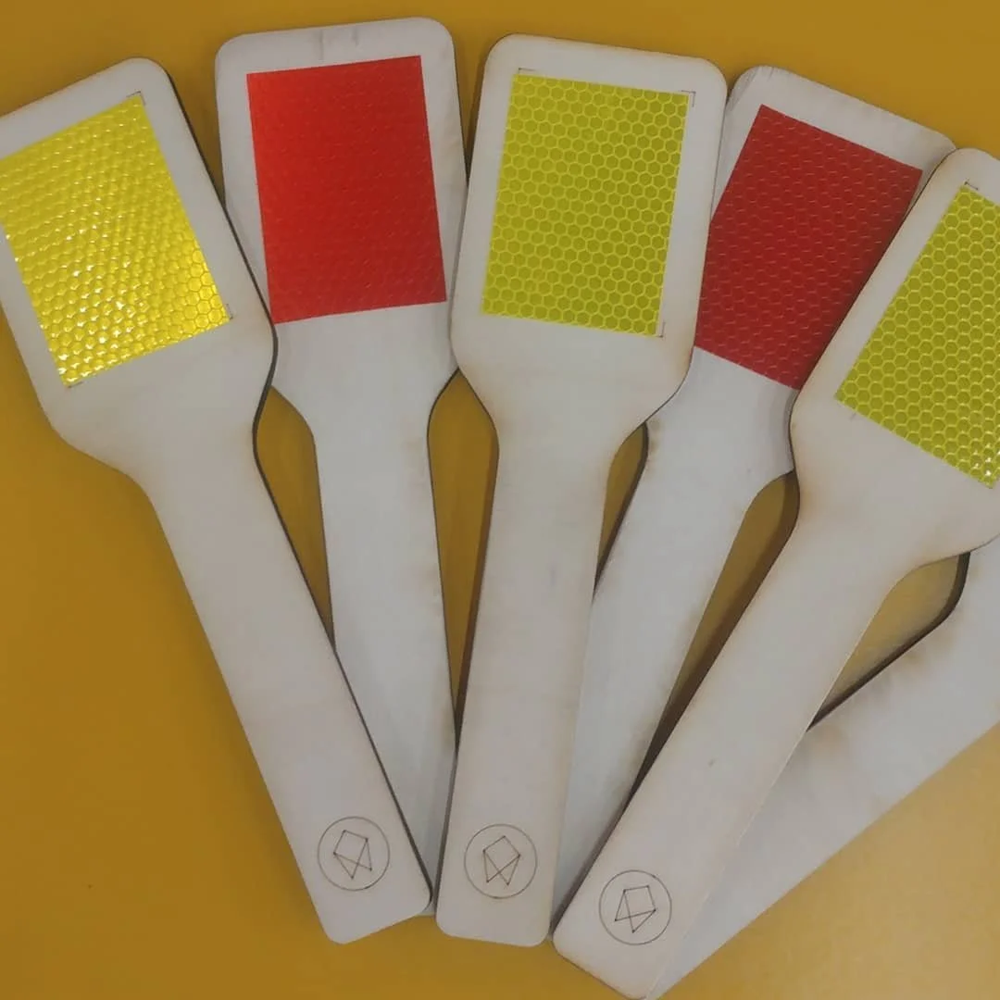
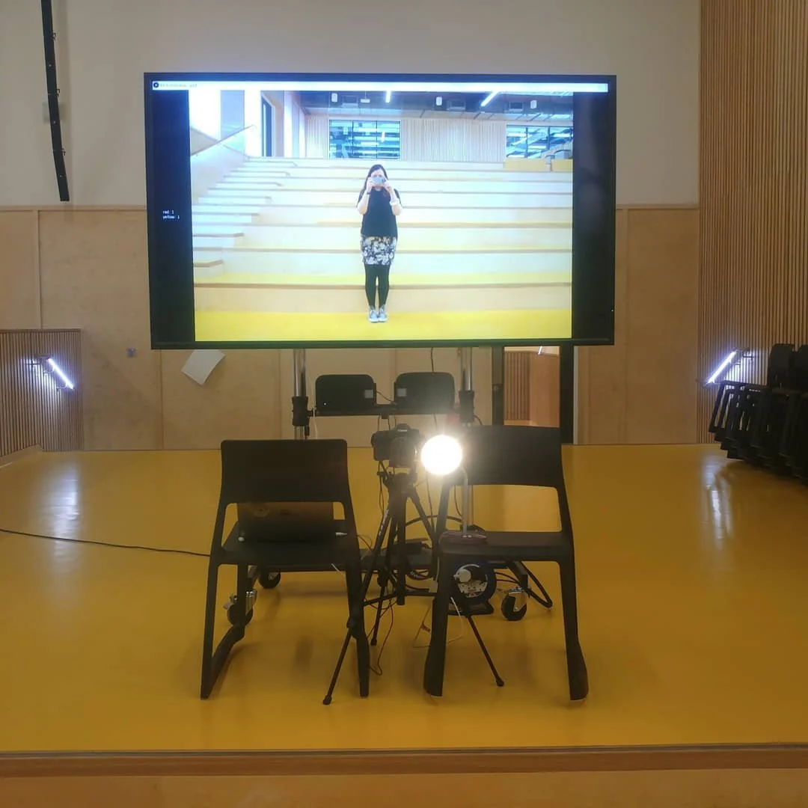
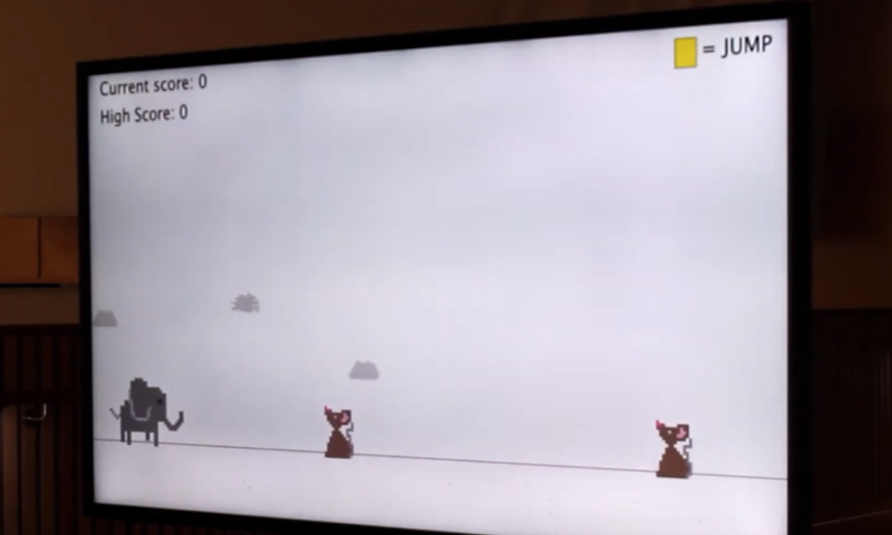
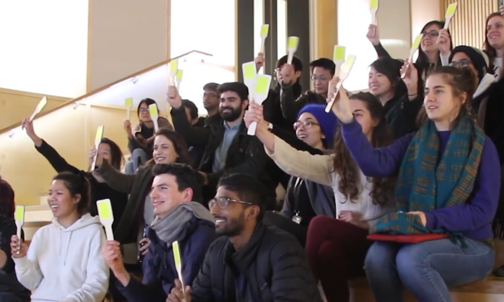
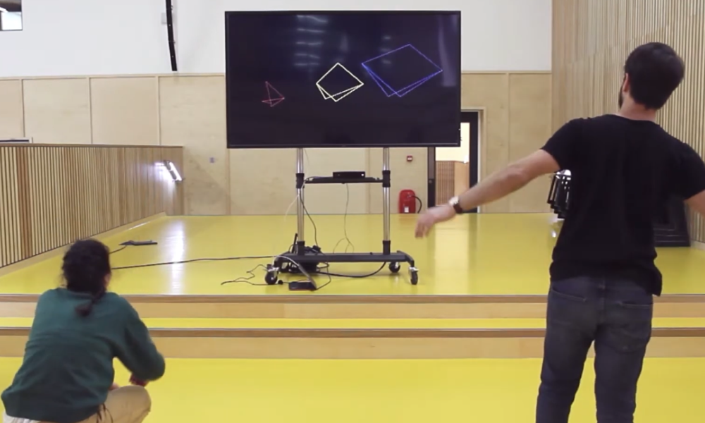
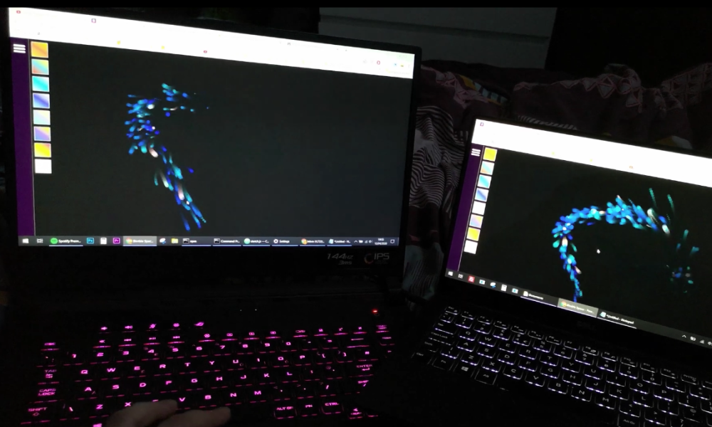
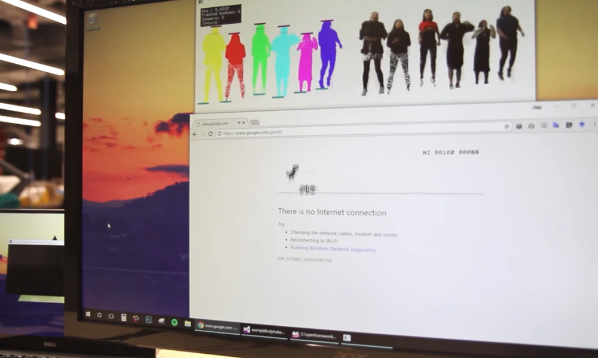
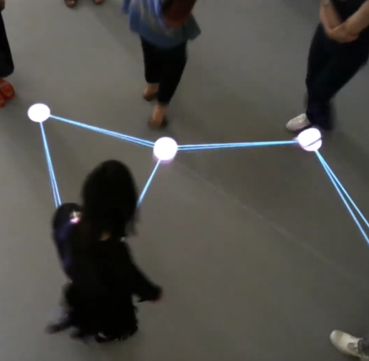

I became interested in the ways that multiple people can interact with a computer interface at once and prototyped a series of experiments to offer various modes for interaction, and to see how people felt while using them.
I used unusual interfaces like handheld objects and body tracking, and combined the inputs in varied ways, to explore how a group of people can engage with a cybernetic system together.
Audience control with paddles
Inspired by an experiment at SigGraph in 1991, I gave an audience paddles with red on one side and yellow on the other and let them play adaptations of games like Pong, Flappy Bird and Chrome's T-Rex game, which I prototyped from scratch in Processing.
A camera facing the audience picks up how many players are holding up the red side of their paddle and how many the yellow, to control up and down movement or trigger a jump within the game.
I did some initial guerilla testing of a basic prototype with a small group of friends at a party, and then arranged for a larger group to take part during an evening of talks at Here East in Hackney.







I learned a lot from these paddle game prototypes, here are some insights:
-
Iteration during testing
I could only test these interactions with groups of people present, so I coded some changes live to make the most of testing sessions. This worked well, especially when I let people know what I was doing and took some of their suggestions, keeping them engaged.
-
Leaders, followers and the hive mind
Some participants try to lead the group by shouting out instructions, while others stay quiet. For example, in the T-Rex game, paddles need to be flipped at the same time to trigger a jump, and shouts of “now! now!” could often be heard.
In the Flappy Bird-like game, there is no point shouting out, because if everyone goes to red at once then the rocket will crash into the wall. I didn't explain this to the audience, but a focused hush came over the crowd as they played.
They had tried around 8 rounds with no points at all and I was about to move on, thinking it must be too difficult. Then suddenly something clicked, they gained control and managed to travel past several planets, like they'd tuned into each other.
-
Experience as a goal
Lots of early feedback from participants was focused on changes I could make to enable them to achieve higher scores. This led to me creating less goal-focused interactions, to draw people away from competitiveness and more into the group experience.
-
Group interaction for connection
Audience members, even those who didn't know each other, started chatting and engaging, which was great to see. There is huge potential for multi-user games and interactions to facilitate connection.
Weird bodies
I used a Kinect camera to track two people at once, combining points from their bodies in various ways.
In some experiments I created a third figure in the centre of the frame, which was the average of the two people. In others, I connected random points from each person into one amorphous blob, or joined their arms into a double pendulum.




Remote connection proof of concept
I used websockets and Nodejs to connect events on two canvas elements on different machines.
I coded the interactive visuals in p5js and, when one user draws bubbles on their screen, they show up on the other screen almost instantaneously.
I prototyped this with two local laptops initially and later used this technology to create Flock (which you can read more about in this case study)

Everybody jump
In this interaction, I hooked up the original Chrome T-Rex game to Kinect tracking and set it up so that the T-Rex only jumps if over half the participants are in the air at the same time.
This was fun but quite difficult, our best run was about 4-5 jumps in a row.

Floor projections
I mounted a Kinect camera high up looking down, and used the depth camera to track people's movements within a small area. A projector pointing down at the same space displayed visuals I coded in Processing, which responded to people's positions.



Finally
Much of what I learnt from these experiments went on to inform the creation of my immersive installation When in Dome and the browser experience Flock, both of which offer unusual ways for multiple people to interact.